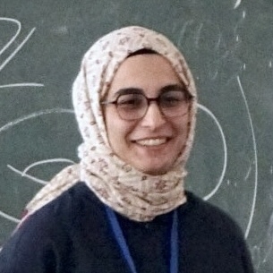

Şeyma Karadereli
Research Assistant at Boğaziçi University
I have recently received my PhD in Mathematics at Boğaziçi University, under the supervision of Ferit Öztürk, and I’m currently looking for a postdoc position.
My mathematical interests are in low-dimensional topology, contact topology, and singularity theory. My work mainly focuses on real algebraic realization of contact structures, meaning Milnor open books supporting contact structures.
Teaching
-
2020 to 2026
Research assistant at Boğaziçi University, conducting problem sessions and office hours, grading quizzes and exams, assisting departmental courses for math students, and mass courses for engineering students.
- Math 101, Calculus 1
- Math 102, Calculus 2
- Math 105, Calculus for Social Sciences
- Math 111, Introduction to Mathematical Structures
- Math 131, Calculus for a Single Variable
- Math 132, Calculus of Several Variables
- Math 162, Discrete Mathematics
- Math 201, Matrix Theory
- Math 221, Linear Algebra
- Math 231, Advanced Calculus I
- Math 325, Matrix Groups
- Math 327, Number Theory
- Math 471, Topology
-
Teaching assistant at Özyeğin University, conducting office hours and grading exams.
Research
Real algebraic overtwisted contact structures on 3-spheres. Published in Algebraic & Geometric Topology, 2025. Article available here.
Talks
Real algebraic overtwisted contact structures on 3-spheres.
-
Young Women in Geometric Topology · Bonn, Germany
-
IMBM Istanbul Topology Days · Istanbul, Türkiye
-
6th Austrian Day of Women in Mathematics · Vienna, Austria
-
Winter School in Low-Dimensional Topology and Singularity Theory · Budapest, Hungary